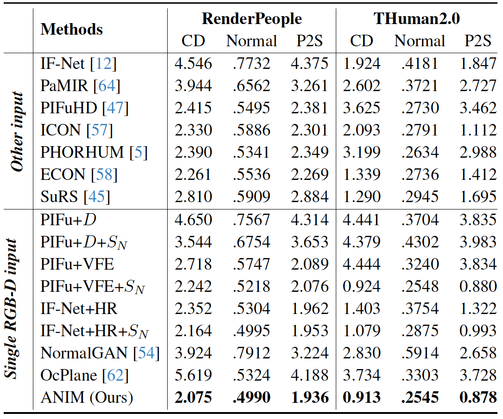
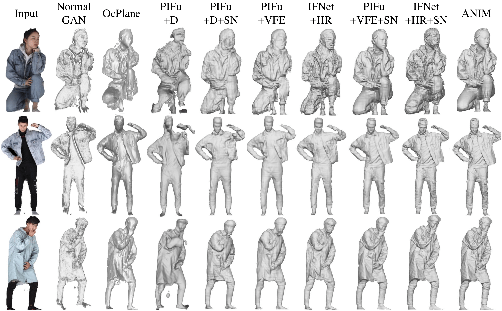
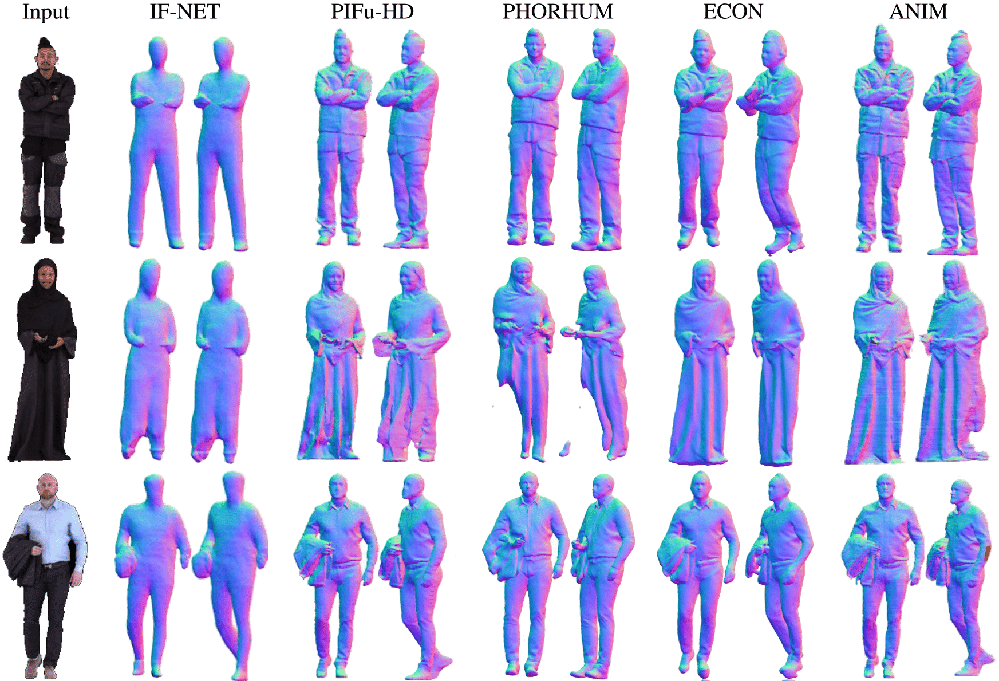

ANIM: Accurate Neural Implicit Model for Human Reconstruction from a single RGB-D image

RGB-D input

ANIM front reconstruction

ANIM side reconstruction
Abstract
Recent progress in human shape learning, shows that neural implicit models are effective in generating 3D human surfaces from limited number of views, and even from a single RGB image. However, existing monocular approaches still struggle to recover fine geometric details such as face, hands or cloth wrinkles. They are also easily prone to depth ambiguities that result in distorted geometries along the camera optical axis. In this paper, we explore the benefits of incorporating depth observations in the reconstruction process by introducing ANIM, a novel method that reconstructs arbitrary 3D human shapes from single-view RGB-D images with an unprecedented level of accuracy. Our model learns geometric details from both multi-resolution pixel-aligned and voxel-aligned features to leverage depth information and enable spatial relationships, mitigating depth ambiguities. We further enhance the quality of the reconstructed shape by introducing a depth-supervision strategy, which improves the accuracy of the signed distance field estimation of points that lie on the reconstructed surface. Experiments demonstrate that ANIM outperforms state-of-the-art works that use RGB, surface normals, point cloud or RGB-D data as input. In addition, we introduce ANIM-Real, a new multi-modal dataset comprising high-quality scans paired with consumer-grade RGB-D camera, and our protocol to fine-tune \name, enabling high-quality reconstruction from real-world human capture.
ANIM Approach
Paper
Citation
M. Pesavento, Y. Xu, N. Sarafianos, R. Maier, Z. Wang, C. Yao, M. Volino, E. Boyer, A. Hilton and T. Tung, "ANIM: Accurate Neural Implicit Model for Human Reconstruction from a single RGB-D image", The IEEE/CVF Conference on Computer Vision and Pattern Recognition (CVPR), 2024.
Bibtex
@inproceedings{
}
Results
Quantitative Comparisons

Quantitative comparisons with state-of-the-art approaches in 3D human reconstruction from a single input.
Qualitative Comparisons

Qualitative comparisons with state-of-the-art approaches in 3D human reconstruction from a single RGB-D data.

Qualitative comparisons with state-of-the-art approaches in 3D human reconstruction from different kinds of input.
Real Data

References
- • IF-Net: J. Chibane et al., "Implicit functions in feature space for 3d shape reconstruction and completion", CVPR 2020.
- • PaMIR: Z. Zheng et al., "PaMIR: Parametric Model-Conditioned Implicit Representation for Image-based Human Reconstruction", TPAMI, 2021.
- • PIFuHD: S. Saito et al., "PIFuHD: Multi-Level Pixel-Aligned Implicit Function for High-Resolution 3D Human Digitization", CVPR, 2020.
- • ICON: Y. Xiu et al., "ICON: Implicit Clothed humans Obtained from Normals", CVPR, 2022.
- • PHORHUM: T. Alldieck et al., "Photorealistic Monocular 3D Reconstruction of Humans Wearing Clothing", CVPR, 2022.
- • ECON: Y. Xiu et al., "ECON: Explicit Clothed humans Optimized via Normal integration", CVPR, 2023.
- • SuRS: M. Pesavento et al., "Super-resolution 3D Human Shape from a Single Low-Resolution Image", ECCV, 2022. • PIFu: S. Saito et al., “PIFu: Pixel-Aligned Implicit Function for High-Resolution Clothed Human Digitization”, ICCV, 2019.
- • NormalGAN: L. Wang et al., “NormalGAN: Learning Detailed 3D Human from a Single RGB-D Image”, ECCV, 2020.
- • OcPlane: T. He et al., “Occupancy Planes for Single-view RGB-D Human Reconstruction”, AAAI, 2023.
Acknowledgement
This research was supported by Meta, UKRI EPSRC and BBC Prosperity Partnership AI4ME: Future Personalised Object-Based Media Experiences Delivered at Scale Anywhere EP/V038087.